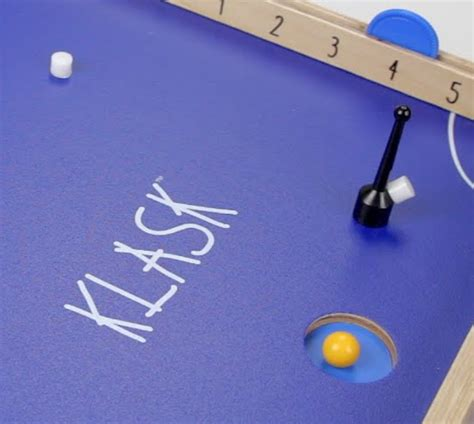

☁ Weather Station
Handmade instruments, live data, and the evolution to digital sensors.
Go to Weather Station →
🏆 KLASK Tournament
Brackets, standings, and match history for our KLASK tournaments.
Go to Tournament →
🎤 Debate
NSDA Nationals 2026 — schedules, rounds, evidence cards, and mock sessions.
Go to Debate →